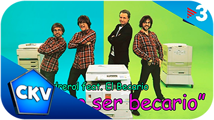

¿Qué es un Becario?
Un becario es una persona, cuyo trabajo es horrible y duerme 3 horas diarias.
Además, un becario debe estar listo para ser maltratado por su jefe y para
ser humillado en directo ante miles de espectadores.
Josep Pedrerol
Josep Pedrerol es el Dios de los becarios, es decir, es el ser, al que todos los
fieles deben seguir y respetar. Algunos afortunados serán contratados por Pedrerol,
y podrán gozar todos sus malos tratos en primera persona.El habla con muchos acertijos,
por eso nos mandó al Profeta Fermín, quién nos ayuda a comprender sus órdenes.
Becarios del Chiringuito
Edu Aguirre
Es el amigo del bicho siuu.

Fermín Canas
Es el profeta de los becarios.

Juanfe Sanz
Ha tomado más protagonismo,
pero es un bueno para nada.

Alex Silvestre
Solo lo contrataron porque
es del Athletic.

Diego Plaza
Lee los periodicos y habla como idiota.

Darío Montero
Verlo hablar da un poco de SIDA.

BECARIOS
Himno de los Becarios
"QUIERO SER BECARIO"

Este himno fue publicado en 2017 por el programa "Crackovia" y fue aceptado
como el himno oficial de los becarios el 13 de enero de 2018 por Josep Pedrerol.
¿Qué dicen nuestros seguidores?
Andrea Pirlo
"Desde que me volví un becario,
mi vida ha sido más feliz y
gané dos torneos en Italia."
DjMariio
"Sigo siendo un manco en FIFA,
pero soy más feliz."
Guía para ser un Becario
1er Paso
El primer paso para convertirse en Becario
es escuchar el himno de los Becarios.
2do Paso
El segundo paso consiste en
servir eternamente a Pedrerol.